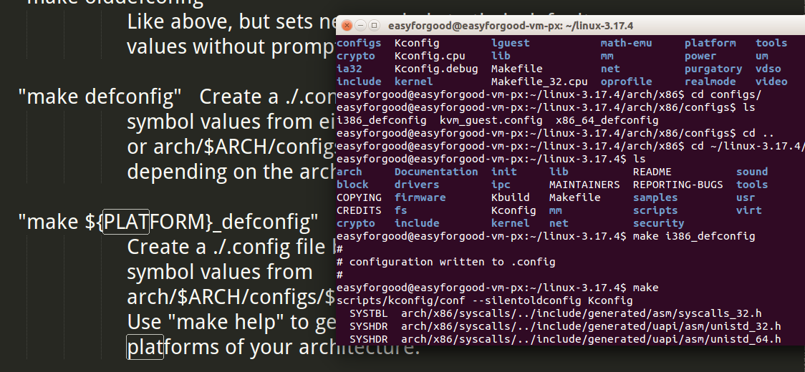
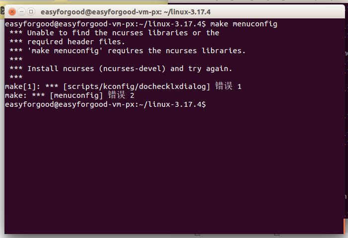
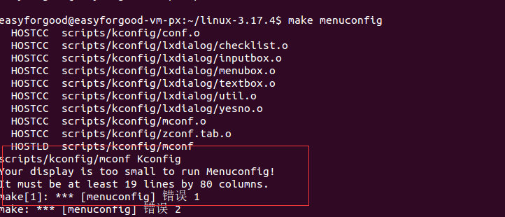
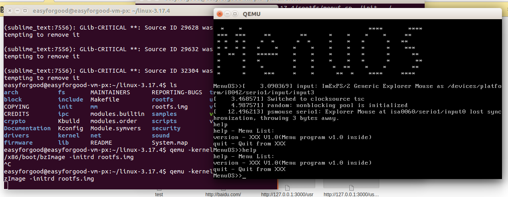
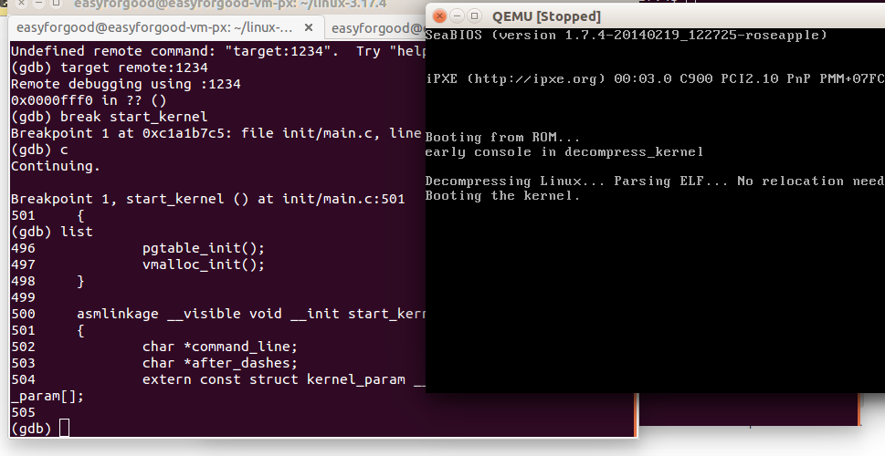

Linux内核分析作业3： 跟踪分析Linux内核的启动过程
朋翔 原创作品转载请注明出处《Linux内核分析》MOOC课程http://mooc.study.163.com/course/USTC-1000029000
一、实验步骤整理
1.下载Linux-3.18.6
2.解压Linux
xz -d linux-3.18.6.tar.xz
tar -xvf linux-3.18.6.tar
查看项目文件夹：

3.设置编译选项并编译内核
设置成i386的配置：
make i386_defconfig
截图：

进入图像化配置界面：
make menuconfig
并设置成调试信息开启：
kernel hacking—>
[*] compile the kernel with debug info
截图：

最后编译（等待若干时间后）：
make
make menuconfig 遇到的问题：
- 提示 “unable to find ncurses libraries ...”

解决办法：安装 libncurses5-dev
sudo apt-get install libncurses5-dev
- Your display is too small to run menuconfig

解决方法：直接把窗口最大化就行了！
4.制作根文件系统
cd ~/LinuxKernel/
mkdir rootfs
git clone https://github.com/mengning/menu.git
cd menu
gcc -o init linktable.c menu.c test.c -m32 -static –lpthread
cd ../rootfs
cp ../menu/init ./
find . | cpio -o -Hnewc |gzip -9 > ../rootfs.img
（注：最后一步实际上是有三个部分组成 find命令 和cpio命令和 gzip命令 cpio是备份归档的命令，gzip是压缩）
5.运行menuOS 并进行设置调试
启动：
qemu -kernel linux-3.18.6/arch/x86/boot/bzImage -initrd rootfs.img
运行截图：

启动调试：
qemu -kernel linux-3.18.6/arch/x86/boot/bzImage -initrd rootfs.img -s -S
注：
-S freeze CPU at startup (use ’c’ to start execution) 第一开始运行时停住
-s shorthand for -gdb tcp::1234 若不想使用1234端口，则可以使用-gdb tcp:xxxx来取代-s选项
再开启另外一个shell，运行gdb
gdb
(gdb)file linux-3.18.6/vmlinux # 在gdb界面中targe remote之前加载符号表
(gdb)target remote:1234 # 建立gdb和gdbserver之间的连接,按c 让qemu上的Linux继续运行
(gdb)break start_kernel # 断点的设置可以在target remote之前，也可以在之后
(gdb)list 查看源代码
(gdb)continue 继续运行到下一个断点
截图：

二、启动过程分析
整体上看，启动流程大致是这样的：
加电或者复位是先从bios启动，bios完成基本的硬件自检和环境初始化后，将bootloader（linux是grub，windows是ntloader）拷贝到内存。
然后执行bootloader，bootloader会进一步初始化，读取硬件信息，加载分区表，初始化中断向量表以及初始化页表等一系列初始化真正内核启动代码运行环境的操作，最后通过b startkernel，跳转并执行startkernel
start_kernel 的主要功能是 进一步完成的存储管理、设备管理、文件管理、进程管理等任务的初始化
这一块的代码相当复杂，直接mark下基本的：
tick_init(); //时钟源初始化
setup_arch（）; //最后一点和体系结构相关的初始化，开启mmu，初始化内存结构段表，页表啥的
init_IRQ（）; //对中断向量表的初始化
trap_init（）；//进一步初始化硬件中断，主要是中断链表，中断处理函数
sched_init（） //和进程调度相关的初始化
time_init（）//定时器的初始化
console_init（） //终端初始化，tty
vfscachesinit_early(); //虚拟文件系统初始化，后面挂载根文件系统用
主要分析下 rest_init()
static noinline void __init_refok rest_init(void)
{
int pid;
rcu_scheduler_starting();
kernel_thread(kernel_init, NULL, CLONE_FS);
numa_default_policy();
pid = kernel_thread(kthreadd, NULL, CLONE_FS | CLONE_FILES);
rcu_read_lock();
kthreadd_task = find_task_by_pid_ns(pid, &init_pid_ns);
rcu_read_unlock();
complete(&kthreadd_done);
init_idle_bootup_task(current);
schedule_preempt_disabled();
cpu_startup_entry(CPUHP_ONLINE);
}
rcu_scheduler_starting()
看了解释，这个函数是完成schedule最后的初始化工作，就是打开对RCU锁的检测，因为后面也会用到。RCU是一个高性能的读写锁，具体的请参考：Linux 2.6内核中新的锁机制--RCU
kernelthread(kernelinit, NULL, CLONE_FS);
启动一个内核线程，这个内核线程的执行体是kernel_init（）
他的第一句话就是kernelinitfreeable(void) 中的
waitforcompletion(&kthreadd_done);
意思是需要等待kthreadd_done这个信号量释放，在之后的代码中才会释放。因此我们先往下看
numadefaultpolicy();
设定NUMA系统的内存访问策略为默认 这里的NUMA 是非均匀访存模型，目测和SMP有关
pid = kernelthread(kthreadd, NULL, CLONEFS | CLONE_FILES);
这里又会创建一个kthreadd内核线程，这个线程首先会根据kthreadcreatelist 循环创建其他内核线程，然后会通过该线程管理和调度别的内核线程（貌似又被称为worker_thread,好像还和中断处理的下半部分有关了，mark下回头看）
rcu_read_lock();
kthreadd_task = find_task_by_pid_ns(pid, &init_pid_ns);
rcu_read_unlock();
complete(&kthreadd_done);
这就是可以理解为将threadd根据kthreadcreatelist初始化的内核线程链表赋值给kthreadd_task
kthreaddtask = findtaskbypidns(pid, &initpid_ns);
作用是通过pid来查找其对应的taskstruct的结构体 可以猜到 taskstruct肯定是链表
剩下的内容就是start_kernel如何沦为idle进程：(●'◡'●)
init_idle_bootup_task(current);
schedule_preempt_disabled(); //关调度抢占
cpu_startup_entry(CPUHP_ONLINE);
initidlebootup_task(current); 将当前进程也就是0号进程init_task 的sched_class 设置成 idle 大概意思应该是调度时机为idle，即cpu空闲时调度
cpustartupentry(CPUHP_ONLINE);
这个老师分析过了。最后会进入/linux-3.18.6/kernel/sched/idle.c 中的 static void cpuidleloop(void) 这是一个死循环。 init_task完全堕落成0号进程了。
回到之前的 kernel_init
前面会进行很多初始化工作，内存的，SMP的，锁检测的。
比较重要的是 dobasicsetup(); 里面涉及到了一系列驱动程序的加载
之后会进行一系列复杂的根文件系统加载工作，先创建虚拟文件系统rootfs，然后根据不同的文件系统类型和格式，会有不同的加载根文件系统。
最终他会启动开始运行init程序，也就是系统启动时会自动加载的程序， 如果你没有在启动参数里设置（execute_command中没有），那么最终会
run_init_process("/sbin/init");
run_init_process("/etc/init");
run_init_process("/bin/init");
run_init_process("/bin/sh");
在这四个默认位置寻找init程序，如果没有，则内核panic
panic("No init found. Try passing init= option to kernel. "
"See Linux Documentation/init.txt for guidance.");
到这里基本上就都结束了。
三、 总结
Linux内核启动流程水太深了。
但是 我们要明白 1号进程为init进程，0号进程为idle进程，是原来init_task变成的。
附：
相关链接已经贴到文中
顺便提一下 发现 IBM developerWorks 中有很多很好很有深度的资料！ 强烈推荐！